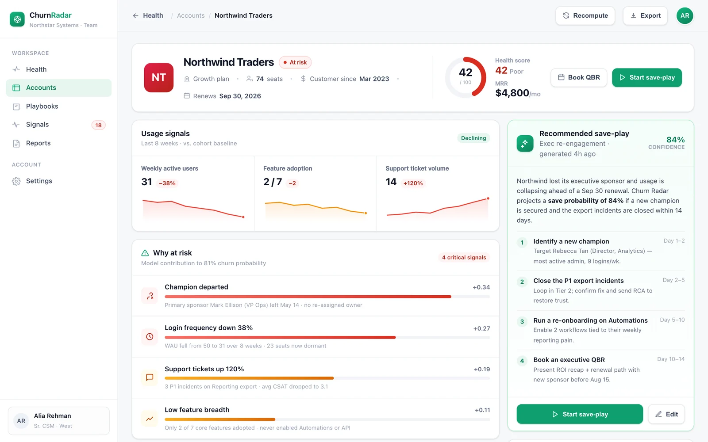

Score
An XGBoost churn model turns usage, support, renewal and champion signals into a live 0–100 health score and churn-risk % for every account.
Churn Radar scores every B2B account 0–100, tells you exactly why it's slipping, and hands your CSM the save-play to run — with a confidence estimate attached.
Churn Radar attributes every at-risk score to the behaviour behind it — so the number always comes with a reason your team can act on.
Falling logins, seats and core-action volume — the earliest tell that value is fading.
Ticket spikes, unresolved escalations and slipping sentiment across recent conversations.
Contract windows closing without expansion signals or an engaged buying committee.
Your internal advocate goes quiet or leaves — the single sharpest predictor of a lost account.
Every score decomposes into the drivers that produced it — with weights, not vibes. Here's how one at-risk account breaks down.
Churn Radar closes the loop from raw behaviour to the next action a CSM should take — no spreadsheet archaeology in between.
An XGBoost churn model turns usage, support, renewal and champion signals into a live 0–100 health score and churn-risk % for every account.
Each score is decomposed into weighted drivers, so the CSM sees why an account is at risk — not just a number to distrust.
A sequenced save-play lands with owners, steps and a confidence estimate — the exact play to run to keep the account.
BuildspaceLabs built the MVP front end: a portfolio-triage Account Health board and a per-account detail view for the CSM.
Live NRR, at-risk and saves KPIs sit above a colour-coded, sortable table — so the accounts that need a human are always on top.

A health ring, weighted why-at-risk drivers, usage sparklines and an activity timeline — capped by an AI save-play with its confidence score.

Health scoring, risk drivers and save-plays consolidated into one CSM surface — nothing left in a spreadsheet.
Live NRR, at-risk and saves KPIs above a triage-ready, colour-coded portfolio table.
A predictive score and churn-risk % per account, refreshed as behaviour changes.
Sequenced steps with owners and a confidence score — the recommended play to keep the account.
Every score decomposed across usage, support, renewal and champion-departure signals.
Net revenue retention charted over a rolling year, from 98% up to 112%.
Usage sparklines, why-at-risk driver weights and an activity timeline on one screen.
A score nobody understands gets ignored. Churn Radar shows the weighted drivers behind every health score — so the recommendation carries its own justification.
Delivered as a production-quality MVP in an eight-week engagement.
We build AI-native products like Churn Radar. Tell us about your customer-success motion and we'll show you what an explainable health system looks like on your data.